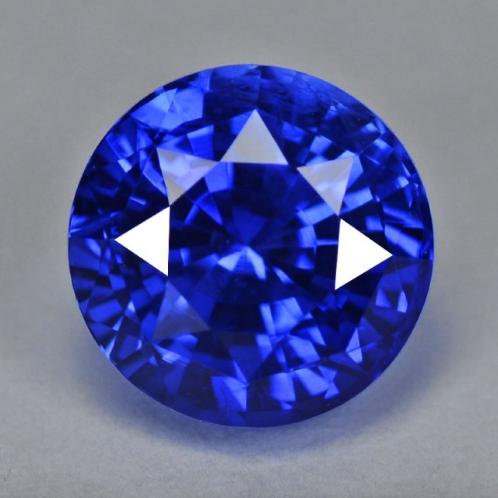

Earth's Special Gems
A Bit Of History
Some Slight History For A Few Gemstones
"Rubies in 15th and 16th centuries were known as the Ages of Exploration. During this time, rubies sourced from Burma’s Mogok region became extremely popular, and they continue to remain sought-after even today."

"Sapphires are mentioned in the holy bible twelve times. Sapphires have been a notable symbol throughout hebrew lore. They were a sign of truth, royalty and sincerity." 
"People believed emeralds could confer riches, power, and eloquence if worn as talismans. Purportedly, these gems also strengthened memory and sharpened wits. Its most valuable power was perhaps bestowing the ability to predict future events."
"The opal gemstone dramatic play-of-color has inspired writers to compare it to fireworks, galaxies, and volcanoes. Hundreds of years ago, opal was believed to embody the virtues and powers of all colored stones."